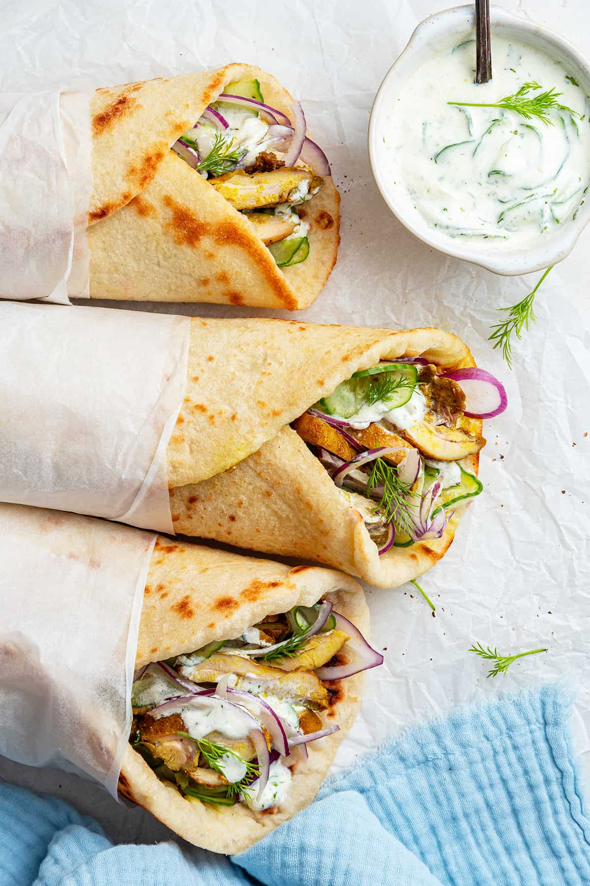

Shawarma

Shawarma is a popular Middle Eastern dish that consists of seasoned meat (usually lamb or chicken)
that is grilled on a vertical rotisserie and served in a warm pita bread with various toppings and sauces.
It is typically accompanied by tahini sauce, hummus, or salad.
below is the ingredient needed for this recipe:
- 1 lb boneless chicken thighs or beef/lamb slices
- 1/4 cup plain yogurt
- 2 tablespoons olive oil
- 2 tablespoons lemon juice
- 2 cloves garlic, minced
- 1 teaspoon ground cumin
- 1 teaspoon ground paprika
- 1/2 teaspoon ground turmeric
- 1/2 teaspoon ground cinnamon
- 1/4 teaspoon ground cayenne pepper (optional, for heat)
- Salt and pepper to taste
- Pita bread or flatbreads for serving
- Optional toppings: sliced tomatoes, cucumbers, onions, lettuce, pickles, tahini sauce, garlic sauce, or hot sauce
And here is the instructions:
- In a bowl, combine the yogurt, olive oil, lemon juice, minced garlic, cumin, paprika, turmeric, cinnamon, cayenne pepper (if using), salt, and pepper. Mix well to create the marinade.
- Add the chicken thighs or beef/lamb slices to the marinade and coat them thoroughly. Cover the bowl and let it marinate in the refrigerator for at least 1 hour (or overnight for more flavor).
- Preheat a grill or stovetop grill pan over medium-high heat. If using a grill, lightly oil the grates to prevent sticking.
- Remove the marinated meat from the refrigerator and thread it onto skewers (if using chicken thighs) or place it directly on the grill (if using beef/lamb slices).
- Grill the meat for about 4-6 minutes per side (for chicken) or until cooked through and nicely charred. For beef/lamb slices, cook until desired doneness is reached.
- Once cooked, remove the meat from the grill and let it rest for a few minutes before slicing it thinly.
- Warm the pita bread or flatbreads on the grill for a minute or two until soft and pliable.
- Assemble the shawarma by placing sliced meat onto the warm pita bread and adding your choice of toppings such as sliced tomatoes, cucumbers, onions, lettuce, pickles, tahini sauce, garlic sauce, or hot sauce.
- Roll up the pita bread to enclose the fillings and serve immediately. Enjoy your homemade shawarma!
Back to Recipes